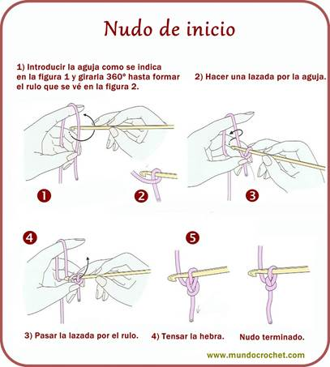
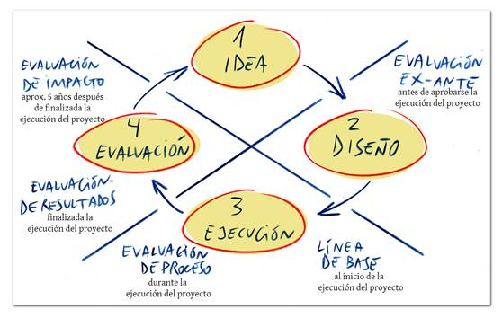
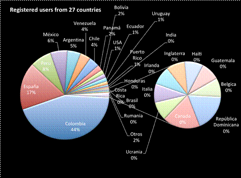
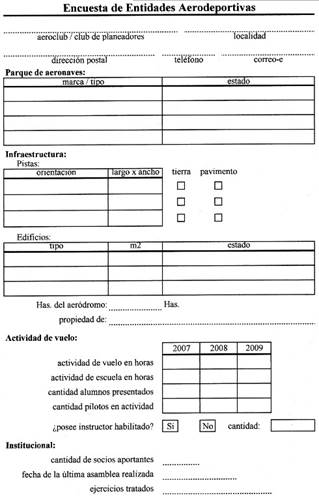

Después de haber tomado unos minutos para planificar, es hora de empezar a desarrollar. Es muy tentador empezar a grabar vídeos y evaluaciones, pero si usted hace eso, puede crear un curso que no tiene sentido y que no cumple su objetivo primario o ninguno de los objetivos complementarios que planeaste. Dicho esto, a pesar de que se recomienda hacer el desarrollo inicial sin utilizar la tecnología, hay aspectos que deben influir en su estrategia de desarrollo.
En la primera parte de desarrollo hay que ampliar la información que usted determine durante la fase de planificación. Después de eso, te pones a decidir exactamente lo que quieres que los estudiantes aprendan haciendo lo siguiente:
- Aclare
el currículo y currículo oculto para el curso.
- Aclare
las suposiciones acerca de sus estudiantes.
- Escribir
los objetivos claros y específicos.
- Decida
lo que quiere usar en sus evaluaciones, tanto calificadas y sin
calificar.
- Decida
qué otros datos recoger para evaluar la eficacia de su curso.
- Secuencie
y organice el contenido en trozos digeribles.
- Valide
su contenido con los demás.
Aclare el currículo y currículo oculto
para el curso.
Esta es una expansión de lo que hiciste en la etapa de planificación, pero a un nivel más detallado. Por ejemplo:
- El
objetivo principal es enseñar a los tejedores a tejer un jersey en un solo
color. curriculum oculto
- Un
sub-objetivo es enseñarles cómo dar forma a piezas de una prenda.
- Otra
sub-objetivo es enseñarles cómo determinar con exactitud qué tan grande
será una prenda de vestir.
- No
es el objetivo enseñarles a tejer un suéter con 10 colores diferentes.
- No
es un objetivo enseñarles cómo hacer ojales.
Aclare sus suposiciones acerca de sus estudiantes.
Una vez más, esta es una expansión de lo que hiciste en la etapa de planificación. Por ejemplo:
- Los
estudiantes ya saben cómo tejer una bufanda.

- Ellos
sabrán cómo poner hilo dentro y fuera de las agujas y sabrán hacer algunas
otras cosas.
Si el curso realmente es "masivo", el número de estudiantes garantiza una diversidad de público importante. Si usted espera a un público internacional, es necesario aclarar las diferencias en el contenido para las audiencias de diferentes culturas.
Por ejemplo, las personas de las diferentes comunidades sostienen agujas de tejer de manera diferente y por lo tanto hacen las puntadas básicas de manera diferente. ¿Va a enseñar sólo un método? ¿Va a enseñar métodos múltiples?
Decida lo que decida, en una situación como ésta, usted debe considerar explícitamente decir a sus estudiantes que lo que va a enseñar es una sola forma (o varias formas) para hacer lo que sea, y que hay otras maneras. Incluye enlaces para que puedas leer más, e incluso sugiere que los estudiantes discutan estos enfoques alternativos en el foro.
Obviamente, depende de ti lo que esperas que los estudiantes sepan de antemano y cómo diseñar su curso en base a esas expectativas. Algunas cosas se diseñarán para los estudiantes menos informados, otros para los más entendidos. O bien, dada la diversidad de sus estudiantes, usted puede diseñar para la media. Considere las siguientes cuestiones que pueden ayudar a los diferentes estudiantes:
- Recuerde
a los estudiantes que pueden reproducir los vídeos o incluso omitirlos.
- Recuerde
a los estudiantes que puedan repetir las actividades tantas veces como
quieran.
- Tienen
versiones de texto de las lecciones. Esto es clave, especialmente
cuando muchos de sus estudiantes no son hablantes nativos de la lengua.
- Encontrar
una manera de proporcionar preguntas adicionales, más difíciles para los
estudiantes avanzados
- Encontrar
una manera de proporcionar material de apoyo para los estudiantes que
podrían necesitar un poco de ayuda para empezar. Poner material de
referencia en un post Google+ es una forma de hacerlo.
Escribir los objetivos claros y específicos.
Objetivos a lograr:
- Tiene
que decirle a la audiencia lo que van a aprender. Objetivos
claros, responder el "¿Qué hay
para mí?".
- También
mantienen el contenido conciso y específico. Esto le permite evitar
abrumar a sus estudiantes con demasiada información.
Objetivos, resultados precisos de la información. Por ejemplo:
- Al
final de este curso, el alumno será capaz de elegir el tamaño de la aguja
correcta para el hilo, para que sepan cómo medir el tamaño de una prenda.
- El
alumno será capaz de aumentar y disminuir el número de puntos en una fila,
por lo que pueden hacer en forma de prendas.
Al decidir los objetivos de su curso, trate
de diseñar para el término medio. No haga los principales objetivos
demasiado fáciles o demasiado difíciles.
Decida lo que quiere evaluar en sus exámenes,
tanto calificadas como sin calificar.
- En
el desarrollo de software, esta idea se conoce como desarrollo basado en
pruebas. La idea es ser muy concreta "Los estudiantes deben
saber las respuestas a este conjunto de preguntas". A continuación,
crea las lecciones para que se active ese resultado.
- Las
evaluaciones sirven para múltiples propósitos. Le permiten evaluar
los conocimientos de los estudiantes para que pueda evaluar su progreso,
pero también para que pueda mejorar el contenido del curso para futuras
versiones.
- Haga
sus evaluaciones atractivas y desafiantes, pero no intimidantes y
frustrantes. Usted quiere la evaluación para evaluar el progreso de
los estudiantes, no para asustar.
- Recuerde
que su audiencia puede tener una amplia gama de familiaridad con el mundo
online.
Asegúrese de que la mecánica de hacer las evaluaciones no interfiere con el contenido de las evaluaciones.
- Decidir
si desea o no que las evaluaciones calificadas.
Si usted quiere que ellos, tenga en cuenta que las cuestiones de clasificación para los estudiantes. Los estudiantes quieren saber cómo funciona la clasificación y se preocupan por conseguir un alto grado.

- Suponiendo
que usted desea evaluaciones calificadas, decidir cómo estas van a afectar
la calificación final.
Por ejemplo, suponga que tiene dos evaluaciones calificadas, uno en la mitad del curso y otra al final del curso. Si cuentas la primera evaluación el 35% de la nota final, la evaluación final un 65% de la nota, y se requieren por lo menos una puntuación combinada de 70% para aprobar el curso, entonces si un estudiante falta a la fecha límite para la evaluación media del curso, el estudiante no puede aprobar la asignatura. ¿Es eso lo que quieres?
- Una
vez que el curso ha arrancado por primera vez, su contenido, incluidas las
evaluaciones, se encuentran en la web. La gente va a publicar de
nuevo y compartirlas. Si usted hace el curso de nuevo, muchos de los
estudiantes pueden haber visto ya las evaluaciones de la última vez que impartió
el curso.

Decida qué otros datos va a recoger para
evaluar la eficacia de su curso.
Usted debe recoger los datos para que pueda evaluar la eficacia que usted ha conseguido con su curso y lo que puede obtener información concreta para orientar la mejora futura de su curso. Recogemos tres categorías de datos para los siguientes propósitos:
- Las
evaluaciones, como se mencionó
anteriormente, el nivel de medida de capacidad y mejora de la
capacidad.
Se recabará la información mediante la creación del previo, medio, y post-evaluación y la comparación de calificaciones de los estudiantes en ellas.
- Alcance
y datos de
compromiso mide cuántas personas llegaron a finalizar el
curso y cómo participaron las personas.
El alcance y el compromiso común de datos incluye: ¿Cuántos estudiantes registrados? ¿Cuántos completaron cada unidad y cada lección? ¿En qué países se vienen los estudiantes? ¿Había una diferencia en el rendimiento curso basado en la ubicación?
Usted puede obtener estos datos mediante el uso de Google Analytics para rastrear a los visitantes a su curso.

- Los
datos de Felicidad mide las actitudes de los estudiantes
hacia el material y los sentimientos de satisfacción. Responden a
preguntas tales como qué tan satisfechos estaban con los alumnos lo que
han aprendido y si piensan que van a ser capaces de utilizar el
material.
Aunque no es objetivo, los datos sobre la felicidad es un indicador importante del éxito de su curso. Incluso si un curso es objetivamente eficaz, si sus estudiantes lo odiaban, no es probable que lo recomiendan a sus amigos.
Puede recopilar datos sobre la felicidad mediante el envío de una encuesta post-curso a todos los que se inscribieron para el curso.
Considerar
el envío de encuestas a diferentes personas que se inscribieron pero no terminaron
el curso de los que lo hicieron.
Decidir desde el principio qué datos desea
evaluar hace que sea más probable que a medida que continúe el desarrollo del
curso, se le recuerda a recopilar la información necesaria para hacer esas
evaluaciones. No espere hasta después de que el curso se haya puesto en
marcha, sino que también puede ser demasiado tarde para entonces.

Secuencie y organice el contenido en trozos digeribles.
Algunas cosas a tener en cuenta durante este paso:
- Durante
su primera lección, considere dejar claro a los estudiantes lo que será el
flujo de curso. Dígales que cuando las unidades se den a conocer, qué
plazos existen.
- ¿Hay
un flujo total con el material que tiene un sentido lógico? ¿Qué
dependencias existen en su contenido? ¿Hay pasos que los estudiantes
deben aprender antes de otras medidas? ¿Hay conceptos que tienen que
entender?
- A
pesar de que usted piensa que su contenido tiene un flujo lógico de
principio a fin, recuerde que la gente suele saltar material en
línea. En la medida de lo posible, que cada una de sus lecciones independiente
para que los estudiantes puedan acceder a ellos con éxito en un orden
diferente de lo previsto.
- Para
ayudar con este último punto, ser coherente. Por ejemplo, en primer lugar
definir el tema de la lección, entonces ¿por qué digo que es importante?,
dar una demostración del tema, hablar de ello un poco, y terminar con una
demostración y una breve conclusión.
- Considere
la posibilidad de que la mayoría de las lecciones sean de aproximadamente
el mismo tamaño así sus estudiantes saben qué esperar. Para el
consumo en línea, su material debe estar en partes más pequeñas para las
clases en vivo. Mantenga Vídeos 3-5 minutos de duración.
- Sus
videos se puede hablar de conceptos bastante complejos. Si es así,
asegúrese de realizar copias de seguridad de otras maneras. Por
ejemplo, agregue consejos antes de las actividades y tener múltiples
actividades que apuntan a las diferencias que hacen que la complejidad.
- Debido
a que la comunidad es una parte tan importante de un curso en línea,
considere poner ganchos en el foro de discusión de sus lecciones. Por
ejemplo, los estudiantes pueden realizar una actividad abierta y enviar
los resultados al foro para debatir con otros estudiantes.
- Como
se mencionó anteriormente, debe diseñar los objetivos principales de su
curso para el "promedio" de los estudiantes. Es posible que
aún desea tener material opcional disponible para los estudiantes que
requieren material de apoyo adicional y para los estudiantes que deseen
material desafiante extra. No poner este material opcional en las
lecciones del curso. En su lugar, considere poner este material en
otros formatos, ver anuncios y material opcional.
Validar su contenido con los demás.
- Antes
de hacer el esfuerzo de escribir, grabar vídeo y codificación de
actividades y evaluaciones, consulte con otros que lo que va a enseñar a
lograr sus metas.
- Es
mejor si usted puede comprobarlo con expertos en el área (para asegurarse
de que usted no tiene ningún error) y con los representantes de su público
(para asegurarse de que lo que tiene sentido para ellos).
- Puede
ser difícil recordar lo que no sabe, especialmente si usted es un experto en
el tema. Usted y las personas que le ayudan a crear un campo han de
saber demasiado sobre ello.
- Mantenga
su contenido legal. Esto puede sonar obvio, pero las leyes por lo que
se puede hacer en un salón de clases en vivo puede ser diferente de lo que
se puede hacer en línea. Además, las leyes relativas a lo que se
puede mostrar en un video o hablar en un foro en línea varían de país a
país.
Una vez que haya desarrollado su contenido, es el momento de pasar a la implementación del curso con la tecnología.
Este texto es una traducción de las páginas Wiki del manual de Course Builder